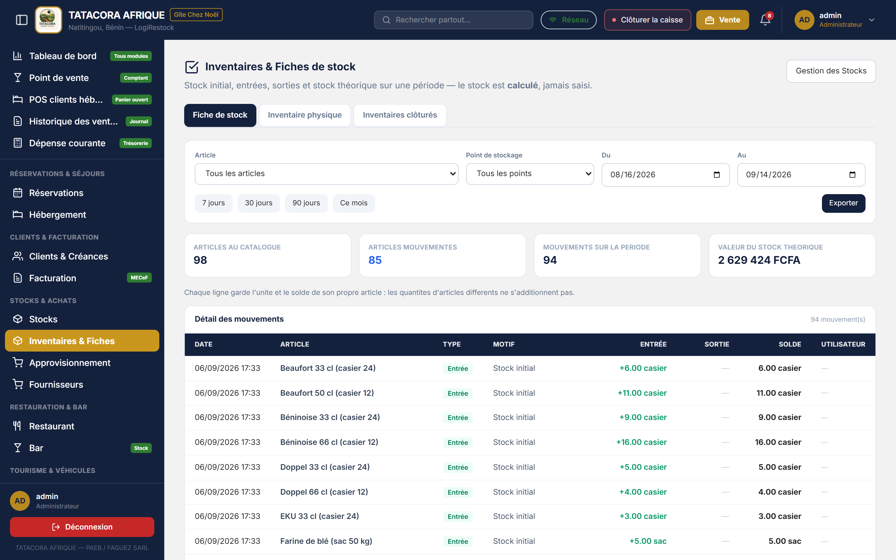
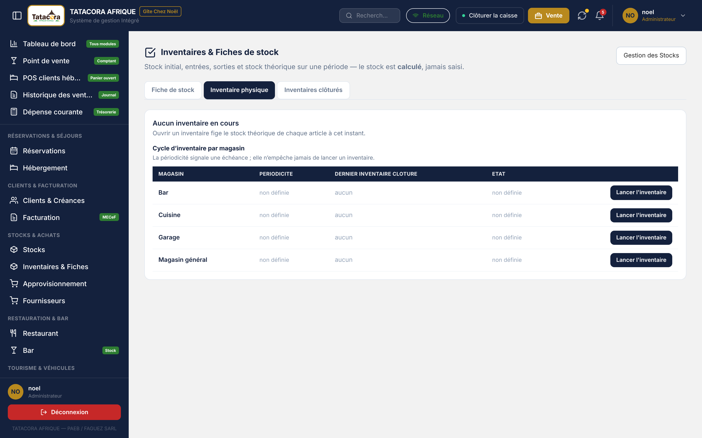
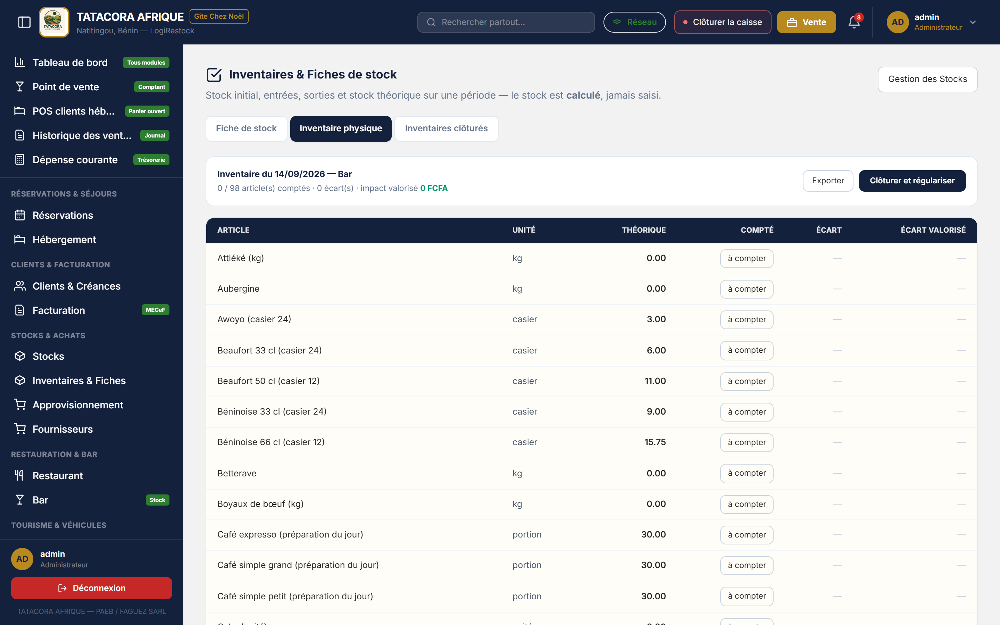
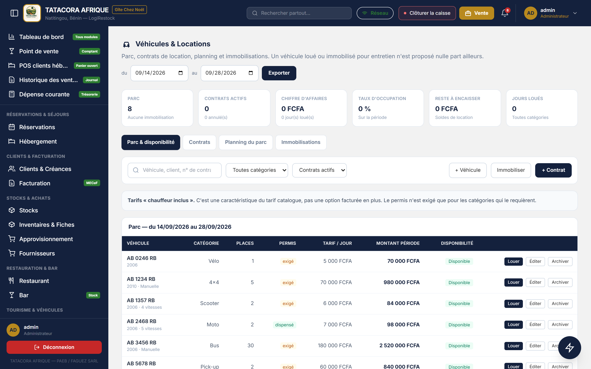
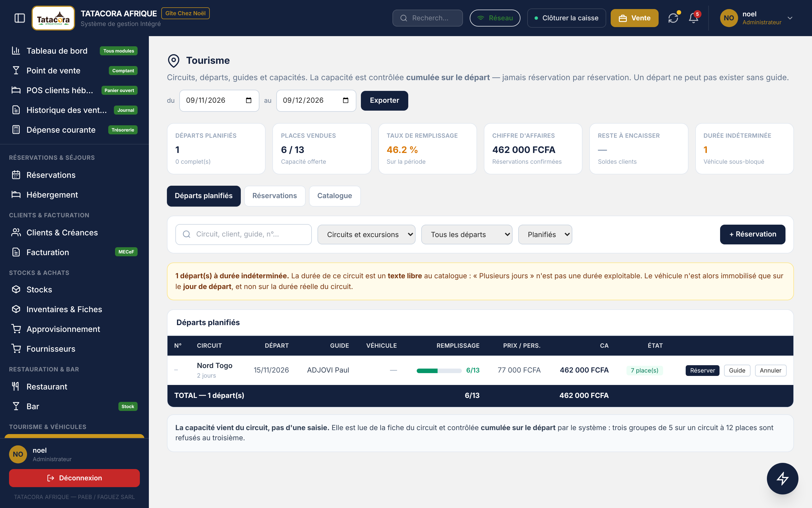

Le stock affiché est calculé depuis les mouvements, il ne se saisit jamais. Sa valeur est
tenue au coût moyen pondéré, qui ne bouge que lorsqu'une entrée porte un coût unitaire :
la réception d'une commande fait entrer la marchandise, mais ne la valorise pas. C'est ce calcul qui permet à
l'inventaire de servir à quelque chose : sans stock théorique, il n'y a pas d'écart à constater.
ℹ️Sur le poste Windows
Les écrans de ce chapitre existent à l'identique sur le poste Windows, avec les mêmes libellés, et fonctionnent
sans réseau : ce que vous saisissez est enregistré sur le poste, puis envoyé au serveur à la
prochaine synchronisation (voir le chapitre consacré à la synchronisation). Les écarts entre le poste et le web
sont signalés au fil du texte.
7.1 Le référentiel des articles
Chemin
Menu latéral ➔ Stocks
Cinq indicateurs ouvrent l'écran : références (suivies et journalières), valeur du stock, articles sous seuil,
mouvements sur 30 jours, répartition gros stock / petit stock. Le tableau se filtre par recherche, par
catégorie, par point de stockage, par état (Sous seuil, En rupture) et par mode de
suivi. Il affiche 25 articles par page.
Créer un article
Cliquez sur + Nouvel article.
Renseignez le Nom de l'article, la Catégorie (Denrées, Boissons, Fournitures, Pièces véhicules),
le Point de stockage de rattachement et l'Unité de mesure (kg, L, unité, sac, carton, casier, pack, bidon, bouteille).
Choisissez le Mode de suivi : gros stock (permanent) ou petit stock (acheté au jour le jour).
Saisissez la Valeur d'achat unitaire (FCFA) : elle valorise le stock d'ouverture et fixe le premier coût moyen.
Sans elle, l'article entre au bilan pour zéro et la variation de stock — donc le résultat — est faussée.
Fixez le Seuil d'alerte : en dessous, l'article apparaît dans les besoins de réapprovisionnement.
Le cas échéant, indiquez le Stock d'ouverture : il est enregistré comme un mouvement d'entrée, ce qui le rend visible en fiche de stock.
Cliquez sur Créer l'article.
ℹ️InformationGros stock ou petit stock ? Le gros stock (suivi permanent) entre dans l'inventaire et
dans les alertes. Le petit stock (suivi journalier) — la tomate, l'oignon rachetés chaque matin —
n'est ni décrémenté à la vente, ni inventorié, ni alerté : seule la dépense d'achat est constatée. Le classer en permanent
déclencherait une alerte de rupture tous les jours.
Modifier ouvre la fiche de l'article. Le stock y figure en lecture seule : il se corrige par un mouvement ou par un
inventaire, jamais par une saisie directe. Le bloc Faire entrer du stock de la fiche enregistre une entrée datée et signée
(quantité, point qui reçoit, coût unitaire) ; il est réservé à l'administrateur, parce qu'une entrée valorisée déplace
le coût moyen pondéré, qui alimente le bilan. Le bouton Mouvement de la ligne reste ouvert aux autres profils habilités.
Enregistrer un mouvement
Sur la ligne de l'article, cliquez sur Mouvement.
Choisissez le type : Entrée (réception, retour), Sortie (consommation, vente) ou Perte (casse, péremption, vol).
Indiquez le Point de stockage, la Quantité et le Motif — « Réception marché », « Consommation cuisine », « Péremption ».
Pour une entrée, saisissez le Coût d'achat unitaire (FCFA) : il recalcule le coût moyen pondéré de l'article.
Laissez-le vide pour un simple transfert entre points : déplacer une marchandise ne change pas son coût.
Cliquez sur Enregistrer.
Il n'existe pas de mouvement « Régularisation » à saisir à la main : les régularisations naissent de la clôture d'un inventaire
(§7.3) et portent le type Inventaire dans la fiche de stock.
🛑Alerte
Si la sortie dépasse le stock disponible, le logiciel affiche Stock insuffisant et demande une
confirmation explicite. Forcer la sortie crée un stock négatif, tracé comme
rupture forcée dans la fiche et au journal d'audit. Ne forcez que si la marchandise est réellement sortie —
et prévenez le magasinier, car la fiche devra être corrigée.
Importer, exporter, supprimer
Importer charge des articles depuis un classeur Excel (Modèle fournit le fichier à remplir ; voir §13.3). Le stock d'ouverture entre comme un mouvement d'entrée.
Excel et PDF reprennent la liste affichée, filtres compris.
Supprimer n'efface rien : l'article part aux archives (badge Archivé) et se remet en place par Restaurer.
Le logiciel refuse d'archiver un article qui a encore du stock, qui figure sur une commande d'achat en cours,
qui est vendu à la carte ou qui entre dans une recette. Le bouton n'est proposé qu'à l'administrateur, ou aux autres profils
lorsque la bascule correspondante est ouverte dans les Paramètres (§13.2).
ℹ️Sur le poste Windows
Les ventes du bar et du restaurant ne retirent rien du stock sur le poste : le serveur sort le stock d'une vente
à sa réception, et ces sorties redescendent ensuite sur tous les postes. Pour les boissons, l'écran Stocks du poste indique ce
que les ventes encore non envoyées sortiront (« −X en attente d'envoi ») sans le soustraire. Un article sans coût connu affiche
sa valeur à « — » avec sa raison, jamais zéro.
7.2 La fiche de stock d'un article
Chemin
Menu latéral ➔ Inventaires & Fiches ➔ onglet Fiche de stock
Choisissez l'Article (ou Tous les articles, qui présente la fiche de chaque article l'une après l'autre : les quantités d'unités différentes ne s'additionnent jamais) et le Point de stockage.
Choisissez la période : 7 jours, 30 jours, 90 jours, Ce mois, ou saisissez
les dates Du et Au.
Lisez la cascade : Stock initial, Entrées, Sorties, Pertes,
Régularisations, Stock théorique, avec le coût moyen pondéré et la valeur du stock.
Exportez si nécessaire : Export PDF ou Export Excel. Le document de fiche est établi pour un seul article : choisissez-le avant d'exporter.
Le tableau Détail des mouvements liste chaque mouvement avec sa date, son type, son motif,
l'entrée, la sortie, le solde progressif et l'utilisateur qui l'a saisi.
Si le solde progressif ne retombe pas sur le stock théorique, l'écran affiche Incohérence détectée :
ce document ne doit alors pas servir de justificatif, et il faut prévenir l'éditeur.

Figure 7.3 — La fiche de stock d'un article, sur la période choisie.
Ouvrez l'onglet Inventaire physique : le panneau Cycle d'inventaire par magasin liste vos points de stockage.
Sur la ligne du magasin à compter — Magasin général, Cuisine, Bar… —, cliquez sur Lancer l'inventaire. Un inventaire porte sur
un seul point de stockage à la fois.
L'ouverture fige le stock théorique de chaque article à cet instant. Le logiciel confirme :
« Inventaire ouvert — 32 article(s) à compter ».

Figure 7.1 — L'ouverture d'un inventaire physique.
1Le point de stockage à inventorier.
2Le bouton Lancer l'inventaire.
Étape B — Compter
Comptez physiquement, article par article, dans le magasin.
Sur la ligne de l'article, cliquez sur à compter : une fenêtre Enregistrer le comptage s'ouvre. Saisissez la quantité
relevée dans le champ Compté, puis validez. Le bouton de la ligne affiche alors la quantité comptée ; cliquez-le pour la corriger.
L'Écart et l'Écart valorisé apparaissent immédiatement : vert si vous avez trouvé plus
que le théorique, rouge si vous avez trouvé moins.
Suivez l'avancement en tête de tableau : 0 / 32 article(s) comptés · 0 écart(s) · impact valorisé 0 F.

Figure 7.2 — La saisie des quantités comptées.
1La colonne Compté — un bouton par article.
2Le bouton Clôturer et régulariser.
Étape C — Clôturer et régulariser
Vérifiez que tous les articles sont comptés.
Cliquez sur Clôturer et régulariser. Si des articles ne sont pas comptés, la fenêtre Inventaire incomplet vous
prévient : Clôturer partiellement ne régularise que les articles comptés.
Le logiciel génère un mouvement de régularisation pour chaque écart — l'excédent en entrée, le manquant en perte — et archive l'inventaire
dans l'onglet Inventaires clôturés (date, point, articles, régularisés, manquants, excédents, impact net, auteur).
Le bouton Exporter de l'inventaire en cours produit le document en PDF ou en Excel.
🛑AlerteNe clôturez jamais un inventaire incomplet. Un article laissé sans comptage n'est pas compté « à zéro » :
il n'est simplement pas régularisé, et son stock théorique reste inchangé — sans que rien ne le signale ensuite.
Si vous devez interrompre le comptage sur le web, laissez l'inventaire ouvert et reprenez-le : les valeurs déjà saisies sont conservées.
ℹ️Sur le poste WindowsLe comptage en cours n'est conservé qu'en mémoire jusqu'à la clôture : si vous fermez la fenêtre de l'inventaire avant de clôturer,
le comptage est abandonné (la feuille le rappelle sous le tableau). Sur le poste, comptez donc d'une traite, ou clôturez en partiel
et reprenez le reste dans un second inventaire. Un écart sur un article dont le coût n'est pas connu n'est pas valorisé (« — »).
⚠️AttentionComptez avant de saisir, jamais l'inverse. La colonne Théorique est affichée en face de
votre saisie : recopier le théorique parce qu'il « doit être bon » vide l'inventaire de son sens et
fait disparaître l'écart que vous cherchiez précisément à mesurer.
ℹ️Information
Le panneau Cycle d'inventaire par magasin rappelle, pour chaque magasin, la date de son dernier inventaire clôturé.
Les colonnes Périodicité et État affichent aujourd'hui « non définie » : aucune périodicité n'est encore enregistrée,
donc aucune échéance n'est signalée. Lancez vos inventaires à la cadence que vous avez décidée, par exemple une fois par mois (§14.7).
7.4 L'approvisionnement
Chemin
Menu latéral ➔ Approvisionnement
Cinq indicateurs, quatre onglets : articles sous seuil, commandes en attente, réceptions partielles, fournisseurs à payer, total dû.
Onglet
Ce que vous y faites
Besoins
Les articles dont le stock calculé est passé sous le seuil, avec le manque et le prix d'achat. Cochez les lignes, saisissez les quantités À commander (le logiciel suggère de quoi remonter au double du seuil), puis cliquez sur Commander la sélection : choisissez le Fournisseur, vérifiez les quantités et les prix unitaires, puis Créer le bon de commande.
Commandes
Les bons de commande, filtrables par statut (Brouillon, Envoyée, Réceptionnée partiellement, Réceptionnée, Clôturée), avec leur fournisseur, leur montant, ce qui est déjà réglé et leur état. Chaque ligne propose Réceptionner et Régler.
Réceptions
Les bons de réception, avec leur conformité (conforme ou avec écart). Une réception génère l'entrée de stock correspondante : vous ne ressaisissez jamais le mouvement à la main.
Dettes fournisseurs
Les commandes non clôturées, avec le montant commandé, le réglé, le reste dû et l'ancienneté du bon de commande ; le bouton Régler enregistre un règlement.
Sur la ligne de la commande, cliquez sur Réceptionner.
Choisissez le Point de stockage qui reçoit la marchandise.
Pour chaque article, la fenêtre affiche Commandé et Déjà reçu ; saisissez Reçu maintenant (le reste à recevoir est proposé).
Cliquez sur Valider la réception. L'écran annonce la conformité de la réception.
La conformité compare ce que vous avez reçu à ce qui était commandé, avec une tolérance unique, exprimée en pourcentage :
la Tolérance de réception (%) réglée par l'administrateur (Paramètres, onglet Activation & Sécurité, rubrique Exploitation).
Ce pourcentage est le même pour tous les articles et tous les fournisseurs : une livraison de 99,5 % d'un sac de riz n'est pas en défaut si la tolérance le permet.
Recevoir plus que commandé au-delà de la tolérance, ou un article qui ne figure pas sur la commande, rend la réception non conforme.
🛑AlerteTant que la tolérance de réception n'est pas renseignée, aucune réception n'est possible : le logiciel refuse plutôt que de
juger une livraison sur un critère deviné. Si vous obtenez ce refus, demandez à l'administrateur de saisir la tolérance dans les Paramètres.
Ne ressaisissez jamais le stock à la main après une réception : la quantité serait comptée deux fois.
⚠️AttentionLa réception ne recalcule pas le coût moyen pondéré. L'entrée de stock qu'elle génère n'est pas valorisée : le coût moyen et le dernier prix d'achat de
l'article restent ceux qu'ils étaient. Pour valoriser un article, saisissez une entrée avec son coût unitaire (§7.1). Certaines phrases d'aide de l'écran web
laissent entendre l'inverse ; c'est la phrase du présent manuel qui décrit le comportement réel.
Régler un fournisseur
Sur la ligne de la commande (onglet Commandes ou Dettes fournisseurs), cliquez sur Régler.
Saisissez le Montant réglé (FCFA) — un règlement partiel est possible — et choisissez la Trésorerie : Caisse, Mobile Money ou Banque.
Cliquez sur Enregistrer le règlement. Le logiciel écrit le règlement et sa pièce comptable ensemble ; une commande déjà soldée refuse un nouveau règlement.
ℹ️Sur le poste Windows
Le règlement fournisseur se saisit aussi sur le poste, hors ligne : le règlement et sa pièce comptable sont écrits ensemble sur le poste, puis envoyés
au serveur à la synchronisation. Le sélecteur d'exercice de la barre supérieure borne les commandes affichées à l'exercice consulté ; les dettes fournisseurs,
elles, restent un état du jour, toutes années confondues.
ℹ️Information
Les articles en suivi journalier sont exclus des besoins : rachetés chaque matin, ils
déclencheraient une alerte permanente qui masquerait les vraies ruptures.
7.5 Les fournisseurs
Chemin
Menu latéral ➔ Fournisseurs
L'écran Fournisseurs & Achats a deux onglets. Fournisseurs est le référentiel : raison sociale, contact, catégorie fournie
(Denrées alimentaires, Boissons, Fournitures, Carburant, Pièces auto), conditions de paiement (Comptant, 30 jours, 60 jours) et évaluation (Excellent, Bon, Moyen, À revoir).
Commandes d'achat donne l'historique des commandes passées à chaque fournisseur, avec leur statut ; Ajouter commande d'achat en saisit une hors besoin détecté.
Ajouter fournisseur crée une fiche ; Modifier (depuis le détail) la corrige. Un fournisseur se choisit toujours dans la liste lors d'une commande, il ne se saisit jamais en texte libre.
Exporter produit la liste affichée en PDF ou en Excel ; Actualiser relit l'écran.
Supprimer archive le fournisseur (restaurable) ; il est refusé tant que le fournisseur figure sur des commandes d'achat en cours.
Il n'y a pas de bouton Importer sur cet écran. Le référentiel des fournisseurs se charge par l'écran Import & Export,
module Fournisseurs (§13.3).
Chapitre 8Véhicules et tourisme
Le parc de véhicules sert à la location : un véhicule loué sur une période n'est pas louable une seconde fois sur cette période.
Le tourisme, lui, repose sur les circuits, les guides et la capacité de chaque circuit : une réservation de circuit
n'engage pas de véhicule du parc.
8.1 Véhicules & Locations
Chemin
Menu latéral ➔ Véhicules & Locations
Six indicateurs : parc (avec le nombre de véhicules immobilisés), contrats actifs (et annulés), chiffre d'affaires (et jours loués), taux d'occupation,
reste à encaisser, jours loués. Une période (du … au), une recherche et un filtre par catégorie (Berline, 4x4, Pick-up, Moto, Scooter, Vélo, Bus)
bornent l'écran. Quatre onglets :
Parc & disponibilité — chaque véhicule avec sa catégorie, ses places, l'exigence de permis, son tarif par jour, son montant sur la période et sa disponibilité (Disponible, Engagé, Hors service). Un véhicule libre porte un bouton Louer ; les boutons Éditer, Archiver et Remettre en service gèrent la fiche. + Véhicule en crée un (immatriculation, catégorie, année, transmission, places, tarif par jour).
Contrats — les contrats de location, filtrés sur Contrats actifs, Tous ou Annulés, avec période, jours, montant, acompte, reste dû et pièce d'identité. Le bouton + Contrat en crée un ; chaque ligne propose Reçu et Annuler.
Planning du parc — la vue calendaire : libre, location, immobilisé.
Immobilisations — les entretiens et carburations enregistrés (motif, dates, coût, auteur). Le bouton Immobiliser en enregistre un.
Établir un contrat de location
Cliquez sur + Contrat, ou sur Louer sur la ligne du véhicule.
Choisissez le Véhicule, les dates de Départ et de Restitution, puis le Client (créé d'abord, au besoin, dans Clients & Créances).
Saisissez la Pièce d'identité (n° de CNI ou de passeport — obligatoire pour toute location) et, si la catégorie l'exige, le Permis de conduire.
Renseignez, le cas échéant, la Remise (FCFA) et l'Acompte reçu (FCFA). L'aperçu affiche jours × tarif, la remise, l'acompte et le Reste à payer.
Cliquez sur Établir le contrat. Le logiciel confirme le numéro du contrat, le montant et le nombre de jours.
Le montant est figé à la signature (tarif du jour × nombre de jours − remise) : il n'est jamais recalculé si le tarif du véhicule change ensuite.
Le reste dû est la différence entre ce montant et l'acompte.
ℹ️Information
Le permis n'est pas exigé pour toutes les catégories : moto, scooter et vélo en sont dispensés.
L'écran l'indique colonne Permis, ligne par ligne. Les tarifs sont des tarifs
« chauffeur inclus » : c'est une caractéristique du tarif catalogue, pas une option facturée en plus.
⚠️AttentionLa date de restitution doit être postérieure à la date de départ, et le nombre de jours facturés est l'écart entre les deux dates :
un contrat du 10 au 11 facture une journée ; un contrat « du 10 au 10 » est refusé. Vérifiez les dates avant d'enregistrer :
c'est la source d'écart la plus fréquente entre le contrat et l'encaissement.
Reçu, annulation, archivage
Reçu produit le reçu de location du contrat, à imprimer ou à enregistrer en PDF : numéro du contrat, client, véhicule, période, durée, tarif journalier, montant, acompte, reste dû, statut, date et auteur de l'émission.
Il ne vaut pas facture : la facture normalisée est émise à l'encaissement. Pour un contrat annulé, le reçu porte le bandeau « ANNULÉ » et ne mentionne aucun montant dû.
Annuler un contrat le conserve, marqué Annulé, et rend le véhicule disponible : aucun montant n'est plus dû à ce titre. Un contrat n'est jamais supprimé.
Archiver un véhicule le retire du parc actif (il reste consultable) ; Remettre en service l'y ramène. Le logiciel refuse d'archiver un véhicule engagé par un contrat actif qui n'est pas encore terminé — le jour de restitution compte encore comme engagé. Un contrat annulé n'engage plus rien. Le web et le poste appliquent exactement la même règle.
Immobiliser : enregistrer un entretien ou une carburation
Cliquez sur Immobiliser.
Choisissez le Véhicule, le Motif (Entretien ou Carburation), la date (Du) et le Coût (FCFA).
Cliquez sur Immobiliser : l'événement s'inscrit dans l'onglet Immobilisations avec le nom de son auteur.
Cette saisie consigne l'entretien ; elle ne change pas à elle seule le statut du véhicule. Pour qu'un véhicule cesse d'être proposé à la location,
archivez-le (Hors service) et remettez-le en service à son retour.

Figure 8.1 — Le parc de véhicules et sa disponibilité sur la période.ℹ️Sur le poste Windows
Les contrats, immobilisations, reçus et archivages se font sur le poste, sans réseau, avec les mêmes refus et les mêmes phrases qu'au web.
Le numéro du contrat (LOC-…) est attribué par le serveur : tant que le poste n'a pas synchronisé, le numéro du contrat affiche un tiret.
Les rapports exportés (état M14 « Locations », §11.2) excluent les contrats annulés ; une case permet de les inclure (§11.1).
8.2 Tourisme
Chemin
Menu latéral ➔ Tourisme
Six indicateurs — départs planifiés (dont complets), places vendues, taux de remplissage, chiffre d'affaires, reste à encaisser, départs à durée indéterminée —
et trois onglets : Départs planifiés, Réservations et Catalogue. Des boutons + Réservation et
+ Prestation se trouvent en tête d'écran.
ℹ️InformationIl n'y a pas de bouton « + Départ ». Un départ n'existe pas par lui-même : il naît de la première réservation prise pour
un circuit à une date donnée. La capacité n'est pas saisie sur le départ : elle vient de la fiche du circuit (Capacité maximale), et le remplissage est
contrôlé cumulé sur le départ — trois groupes de cinq sur un circuit à douze places sont refusés au troisième, même si chaque
réservation prise isolément semble tenir.
Prendre une réservation (et créer le départ)
Cliquez sur + Réservation, ou sur Réserver sur la ligne d'un départ existant (tant qu'il reste des places).
Choisissez la Prestation (circuit ou excursion du catalogue) et la Date de départ : la fenêtre affiche la Capacité, les places Déjà vendues et les Restantes.
Choisissez le Guide — obligatoire dès la première réservation ; Ajouter permet de créer un guide au référentiel sans quitter la fenêtre — puis le Client.
Saisissez le Nombre de personnes et cliquez sur Réserver.
Un départ a un seul guide : celui de sa première réservation, que les groupes suivants reprennent. Pour en changer, utilisez Guide sur la ligne du départ
(Réaffecter le guide) : le changement vaut pour toutes les réservations du départ. Un guide ne peut pas assurer deux circuits le même jour.
Annuler sur la ligne d'un départ annule le départ et passe ses réservations en annulation ; l'onglet Réservations permet d'annuler une réservation seule, ce qui libère ses places.
Rien ne s'efface : une annulation conserve la ligne.
Le catalogue des circuits
L'onglet Catalogue liste les prestations avec leur type, leur durée, leur zone et thème, leur prix et leurs départs planifiés. + Prestation (ou
Éditer sur une ligne) ouvre la fiche : Intitulé, Thème, Zone, Durée (par exemple « 3 jours / 2 nuits »),
Prix par personne et Capacité maximale. Planifier ouvre la prise de réservation sur la prestation choisie. Les tarifs du catalogue sont ceux opposables au client.
⚠️Attention
Une prestation dont la durée est un texte libre comme « Plusieurs jours » est comptée à durée indéterminée (indicateur et bandeau d'avertissement de l'écran) :
le logiciel ne sait alors protéger l'engagement que sur le jour de départ. Un guide pourrait donc être proposé le lendemain sur un autre circuit. Saisissez de préférence une durée chiffrée au catalogue, et vérifiez à la main la disponibilité
du guide sur toute la durée réelle avant de l'engager ailleurs. (Le bandeau de l'écran parle du véhicule ; au catalogue actuel, un circuit n'engage pas de véhicule du parc.)

Figure 8.2 — Les départs planifiés et leur remplissage.ℹ️Sur le poste Windows
Les réservations de circuits, les guides et le catalogue se gèrent aussi sur le poste, hors ligne. La capacité est contrôlée sur le poste ; si deux postes vendent les dernières places pendant une coupure,
le serveur arbitre à la synchronisation : la seconde vente est refusée avec sa raison, qui apparaît dans la rubrique « À traiter » de l'écran de synchronisation. Sur le poste, certaines colonnes du web
(numéro, acompte, reste dû) affichent un tiret avec leur raison en infobulle.
La location et le tourisme ne se vendent plus au point de vente : leurs contrats et réservations se règlent par leur facture (chapitre consacré à la facturation).